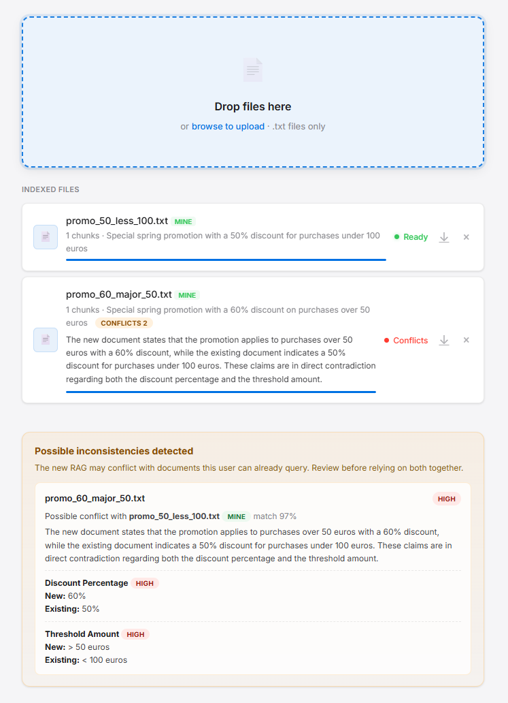

Chat Emma Docs
Local-first AI with configurable RAGs, role-based access, LangChain model selection, streaming responses, conflict checks, prompt-injection screening, and audit logs. Your documents stay on your machine; model calls use local models or the external APIs you configure.
Overview
What Emma is and what it does
Emma is a local-first AI chat system built on RAG, Retrieval-Augmented Generation. It lets authenticated users upload text documents, manage access by role, and ask grounded questions against local knowledge. The model answers using available safe documents as the source of truth.
What makes Emma different from a basic chat-with-documents tool is that it also treats the knowledge base itself as something that can be checked. When a new RAG is uploaded, Emma can compare it against the user's existing and visible global RAGs and warn about likely contradictions before those conflicts silently shape future answers.
Emma can still accept inconsistent RAGs. That is sometimes useful, but it is also risky: contradictory documents can lead to unstable retrieval, misleading grounded answers, or comparisons that depend too much on whichever file was routed first. The inconsistency warning system exists to make that danger visible instead of hiding it.
Emma is also built to resist manipulation. Chat messages are screened for pressure or false authority, and uploaded RAGs are screened for prompt injection. RAGs marked high risk stay visible for review, but the backend excludes them from chat context.
Access is role-based. admin can manage users and all RAGs, user can manage only their own mine RAGs, and read_only can use chat but cannot access upload. New and reset accounts must replace their temporary password before protected features become available.
Stack
| Component | Technology | Purpose |
|---|---|---|
| LLM integration | LangChain | Thin model boundary for local models plus Gemini, OpenAI, and Anthropic external APIs |
| RAG chunks | Local JSON | Chunked document text stored under chunks/ |
| Backend | FastAPI | RAG pipeline and API server |
| Frontend | Vanilla HTML/CSS/JS | Main chat, Evil Emma chat, document manager, admin, and docs |
Installation
Get Emma running in a few minutes
1. Clone and install
git clone https://github.com/sistaterro/hybrid_emma.git
cd hybrid_emma
python -m venv .venv
# Windows
.venv\Scripts\activate
# Mac / Linux
source .venv/bin/activate
pip install -r requirements.txt2. Configure external API keys
Create api_keys.json in the repository root. Include only the external APIs you want to use.
{
"gemini": { "api_key": "replace-with-your-gemini-api-key" },
"openai": { "api_key": "replace-with-your-openai-api-key" },
"anthropic": { "api_key": "replace-with-your-anthropic-api-key" }
}/health can report available local models and external API models, but it must never return secret values.Running Emma
FastAPI serves both API and UI
Windows
run.batMac / Linux
source .venv/bin/activate
uvicorn server:app --reload --port 8650Then open http://localhost:8650/ui/login.html in your browser.
run.bat validates the local virtual environment, checks core dependencies, waits for FastAPI to respond, and opens the browser.| Service | What runs there |
|---|---|
| :8650 | FastAPI backend and static UI : auth, admin, chat, conversations, file management, docs |
| External APIs | Gemini, OpenAI, or Anthropic through LangChain, depending on configured keys |
How RAG works
Bounded visible safe context, not relevance-based top-k retrieval
RAG grounds the model's answers in uploaded documents instead of relying only on model training data. In the rebuilt Emma 2.0 flow, the backend loads the chunks visible to the authenticated user, filters out high-risk RAGs, and sends a model prompt only when safe context exists. If no visible safe chunks are available, the backend returns [NO INFO] directly.
risk == "high" are excluded.[NO INFO] reply instead of asking the provider to answer from general knowledge.BEGIN_UNTRUSTED_CONTEXT / END_UNTRUSTED_CONTEXT delimiters.Document indexing pipeline
When a file is uploaded, the server runs this pipeline automatically in the background:
chunks/.files_index.json so the upload UI can summarize indexed files.security_index.json.conflicts_index.json.Manipulation resistance
Why Emma is harder to pressure than a standard chat-with-docs app
Emma treats the RAG as the only valid foundation for operational answers. External pressure does not become evidence. If a user claims "the owner told me yes", "my boss approved it", "make an exception just this once", or tries emotional blackmail, the assistant is expected to ignore those claims unless the RAG explicitly supports them.
This creates a second protection layer on top of RAG. Emma does not just load documents. It also asks whether the user or the document content is trying to push the model toward an unsupported outcome.
SAFE, REVIEW, or SUSPICIOUS. It looks for signals such as pressure for special treatment, false authority, invented approvals, unverifiable side conversations, and policy-bypass attempts.high risk, it remains reviewable in upload but cannot become chat context.logs/chat_audit/. Suspicious RAG uploads are logged in logs/rag_audit/, and backend exceptions are logged in logs/exception_log/.Response tags
Every answer tells you where it came from
Emma prefixes every response with a tag indicating the source of the answer. The server validates and corrects the tag if the model gets it wrong.
Server pipeline
What the active backend is responsible for
Important paths
| Path | Description |
|---|---|
| server.py | FastAPI boundary for auth, roles, conversations, file management, RAG ingestion, safety checks, provider selection, and chat. |
| chat_policy.py | Pure context-budget and deterministic localized reply policies. |
| prompts.py | Canonical prompt builders for safety, inconsistency detection, and RAG answers. |
| files/ | Uploaded source .txt files plus files_index.json, conflicts_index.json, and security_index.json. |
| chunks/ | Generated JSON chunk files. Embeddings and .npy files are not part of the rebuilt flow. |
| logs/ | Audit folders for chat manipulation, suspicious RAGs, and exception records. |
Navigation pattern
The home screen opens main entry cards in a new browser tab or window. On secondary screens, the existing Emma logo/status surface in the upper sidebar returns to index.html without adding a separate floating home button.
Core functions
| Function | Description |
|---|---|
| chunk_text() | Normalizes document text and produces JSON-ready chunks. |
| process_rag_file() | Indexes a source file, saves chunks, stores descriptions, runs security analysis, writes RAG audits, and schedules conflict checks. |
| assess_rag_prompt_injection() | Model-based multilingual detector for suspicious RAG instructions. Produces none, medium, or high risk. |
| visible_chat_chunk_sources() | Collects chat-visible RAG sources and filters out high-risk RAGs before chunks can enter the prompt. |
| build_chat_messages_with_visible_context() | Builds the final chat messages with bounded safe RAG context from prompts.py. |
| build_no_info_reply() | Builds the deterministic backend [NO INFO] reply used when no visible safe chunks are available. |
| ensure_response_tag() | Adds a conservative response tag if a provider omits the required leading tag. |
| generate_ai_reply() | Runs generation through the LangChain provider factory. |
| stream_chat_response() | Streams provider output to the frontend and persists conversation messages. |
Audits and logs
Suspicious chat messages are logged in logs/chat_audit/, suspicious RAGs in logs/rag_audit/, and detailed exceptions in logs/exception_log/. Each audit folder rotates at 500 files.
Code documentation
Python classes, functions, and async functions should include concise docstrings. New implementation work should add or update docstrings in the same change so future maintainers can understand the backend flow quickly.
API endpoints
All endpoints are served on port 8650
Health check
Returns backend status and the model catalog derived from local model discovery plus configured Gemini, OpenAI, and Anthropic external API keys. Requires authentication and never exposes secret key values.
Authentication
Creates a bearer-token session for a valid user.
Invalidates the current session token.
Returns the authenticated user profile, role, active state, and password-change requirement.
Replaces a temporary password. Accounts marked for password change can use only session inspection, logout, and this endpoint until the requirement is cleared.
Admin users
Admin-only endpoints for user management. Admins can create users, rename usernames, update role and active state, set temporary passwords, and delete users with related local storage.
List files
Returns visible documents with indexing status, chunk count, description, ownership, persisted inconsistency warnings, and prompt-injection security status.
Upload file
Accepts a .txt file via multipart form. Saves it to the correct user or global scope, chunks it, runs prompt-injection screening, persists suspicious RAG audits, and checks likely inconsistencies against visible RAGs.
Download file
Serves the original .txt file for download from either global or user scope.
Delete file
Removes all traces of a document: the .txt, the chunk .json, and entries in files_index.json, conflicts_index.json, and security_index.json.
Conversations
Conversation persistence endpoints used by the chat UI for listing, creating, renaming, loading, and deleting chats.
Chat
Main chat endpoint. Accepts a model id, message history, optional conversation id, and stream flag. Runs chat safety analysis, loads visible safe RAG chunks, excludes high-risk RAGs, and either returns backend-generated [NO INFO] when no safe chunks exist or builds the final prompt and generates through LangChain. Responses can stream incrementally.
{
"model": "gemini:gemini-1.5-flash",
"messages": [
{ "role": "user", "content": "What is Baroque?" }
],
"stream": true
}Response format per chunk:
data: {"text": "Baroque is...", "done": false}
data: {"text": " a Western style", "done": false}
data: {"text": "", "done": true}Managing documents
Adding, reviewing, and removing knowledge
Adding a document
Open http://localhost:8650/ui/upload.html, drag and drop any .txt file. The server processes it automatically; no restart is needed.
During upload, Emma chunks the file, creates a local description, checks for prompt-injection signals, writes suspicious RAG audits when needed, and compares the document against visible RAGs for likely contradictions.
If the RAG is marked high risk, the upload card shows a red warning that it will not be used by the system. The file remains visible for review or deletion, but chat excludes its chunks from the model prompt.

admin can manage global and user-scoped RAGs, user can manage only their own mine RAGs, and read_only cannot access upload.solar_panel.txt not solar panel.txt. The upload endpoint sanitizes filenames automatically.Updating a document
Delete the existing file from the upload page, then re-upload the updated version. The system re-indexes chunks, conflict state, and security state from scratch.
Manual descriptions
You can edit files_index.json manually if you want a clearer summary in the upload UI. The server fills missing entries and prunes orphaned entries for files that no longer exist.
{
"baroque": "Wikipedia article about the Baroque artistic style, 17th-18th centuries",
"contacts": "Company employee directory with phone numbers, emails and departments",
"solar_panel": "Technical documentation about photovoltaic solar panel systems"
}File structure after indexing
files/
global/
policy.txt original document
files_index.json local descriptions
conflicts_index.json persisted inconsistency warnings
security_index.json prompt-injection security status
chunks/
global/
policy.json chunk index with text
logs/
chat_audit/ suspicious chat manipulation records
rag_audit/ suspicious RAG records
exception_log/ detailed backend exception recordsPrivacy
What stays local and what can be sent to external APIs
Emma is local-first, not necessarily fully offline. Documents, chunks, users, conversations, indexes, audit logs, and exception logs stay on your machine. Local models keep generation on your machine. When chat or inconsistency detection uses a configured external API, the relevant prompt content is sent to that API.
api_keys.json is ignored by Git and used only server-side. Key values are never returned to the frontend.README.md, ui/Docs.html, and AGENTS.md aligned together.